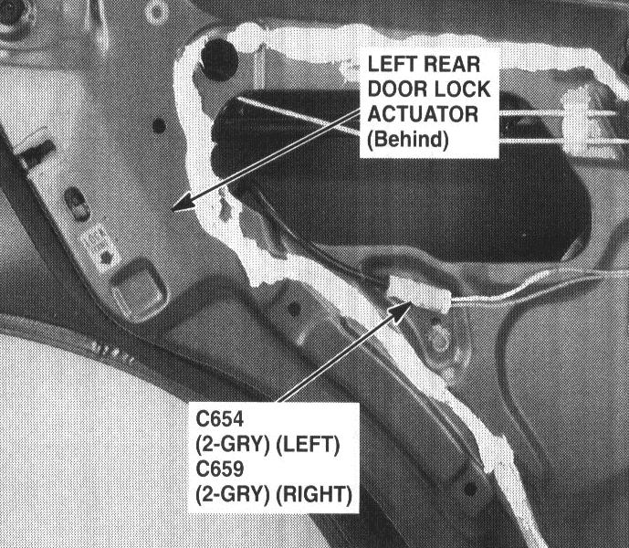

Operation CHARM
: Car repair manuals for everyone.
Home
>>
Acura
>>
1995
>>
Integra (RS, LS) L4-1834cc 1.8L DOHC PFI
>>
Repair and Diagnosis
>>
Body and Frame
>>
Locks
>>
Power Locks
>>
Power Door Lock Actuator
>>
Locations
>>
Left Rear Door Lock Actuator
Left Rear Door Lock Actuator
91. Rear of Left Rear Door (Right Similar):

Rear Of Left Rear Door (Right Similar)